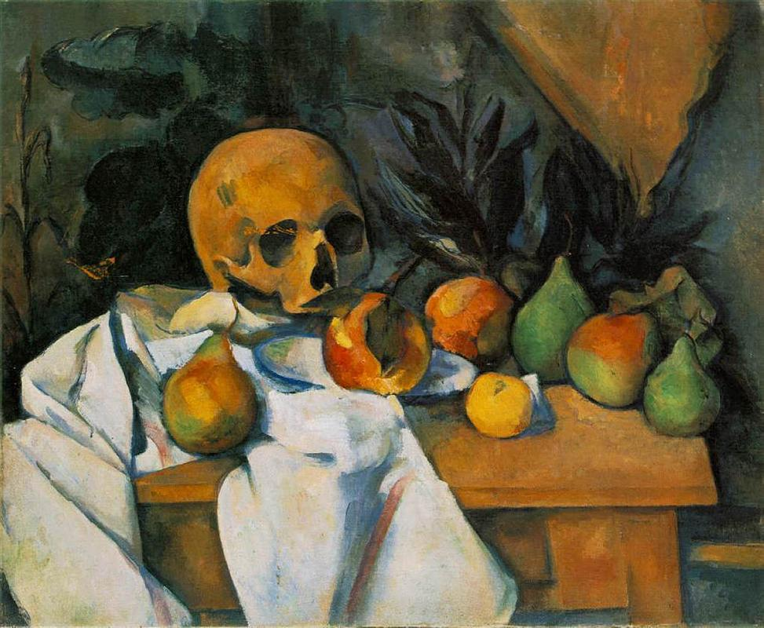

Tu stoi śmierć, wszeptana w usta życia
Spójrz, umierający, czyżby nie mieli przeczuwać, jak pełne
pozoru wszystko, co czynimy.
Tu stoi śmierć, wszeptana w usta życia… Śmierć, którą jeszcze przed jego początkiem pragniemy łagodnie w sobie zawrzeć i bez gniewu… Śmierć, w obliczu której nikt nie widzi śmierci, patrząc w osłupieniu jakby wielkim spojrzeniem zwierzęcia… Śmierć, którą odkształca w sposób tak wymyślny tragicznej skargi maska i żałoba…
Czy możemy nazwać Rilkego poetą śmierci? Odczytującym to słowo bez jakiegokolwiek zaprzeczenia? „Podobnie jak księżyc, również życie z pewnością posiada stronę stale od nas odwróconą, która nie jest jednak jego przeciwieństwem, lecz dopełnieniem, dzięki któremu staje się ono doskonałością, świętą i pełną sferą istnienia…”.
Nieznana cierpień przyczyna,
miłość nie wyuczona,
i dotąd nie zdarta zasłona
z tego, co dzieli nas w śmierci.
Nie mamy nigdy przed sobą czystej, niespełnionej przestrzeni, którą się wie, wie nieskończenie i nie pragnie. Zwróceni ku istnieniu, skłonieni ku rzeczom, przecinamy rysą porcelanę zmierzchu. Tu stoi śmierć, wszeptana w usta życia…
Fragmenty „Elegii duinejskich” i „Sonetów do Orfeusza” w przekładzie M. Jastruna.